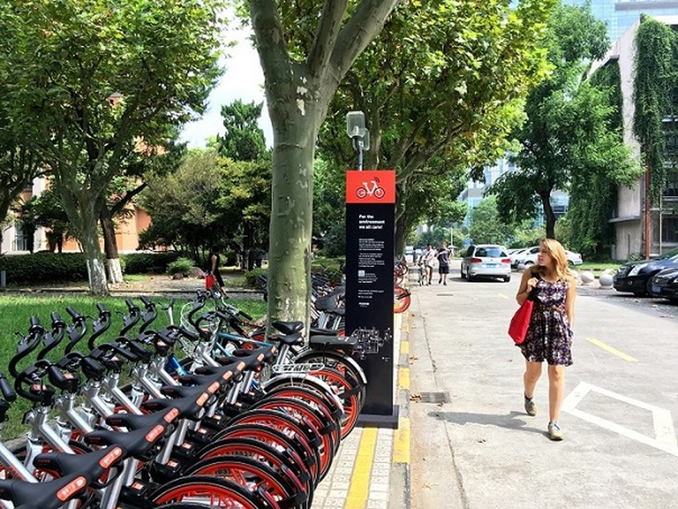

Notícias atuais
Tecnologia 5G vai exigir avançados recursos de segurança para IoT

Há mais máquinas online que celulares e elas têm até rede própria

Podcasts como ferramenta no ensino de Matemática - Prof Adriana


Quais são as novas tecnologias ?
A Internet das coisas tornou-se uma possibilidade devido ao avanço tecnológico nos chips de computadores, que hoje em dia são muito finos, pequenos e facilmente ajustáveis. Como resultado, eles podem ser incorporados em aparelhos ou dispositivos sem interromper suas funções principais, permitindo-lhes receber instruções e executá-los em conformidade.A Internet das coisas tornou-se uma possibilidade devido ao avanço tecnológico nos chips de computadores, que hoje em dia são muito finos, pequenos e facilmente ajustáveis. Como resultado, eles podem ser incorporados em aparelhos ou dispositivos sem interromper suas funções principais, permitindo-lhes receber instruções e executá-los em conformidade. Exemplos:
Óculos: o Google Glass é um projeto que fez o Google ser um dos pioneiros no desenvolvimento de óculos inteligentes. Ele é um acessório em forma de óculos que possibilita a interação dos usuários com diversos conteúdos em realidade aumentada. Outro exemplo de óculos inteligente é o Gear VR, da Samsung.
Fones de ouvido: o mercado de fones de ouvido sem fio tem crescido muito nos últimos anos, e a grande protagonista deste cenário é a Apple, com seus AirPods, que usam bluetooth e baterias, dispensando o uso de fios.
Calçados: um bom exemplo nesta categoria é o Adapt BB, tênis auto-ajustável da Nike, que pode ser controlado e ajustado através de um aplicativo no smartphone ou por um smartwatch. O wearable é recarregável e suporta a tecnologia wireless. Ainda é possível encontrar camisetas, cintos, meias e pulseiras que fazem parte das tecnologias vestíveis.
IoT deixa carros mais seguros e conectados.
IoT no transporte e armazenamento de vacinas
Como iot esta mudando o mundo?
Nos últimos anos, a IoT se tornou uma das tecnologias mais importantes do século XXI. Agora que podemos conectar objetos do dia a dia: eletrodomésticos, carros, termostatos, babás eletrônicas, à internet por meio de dispositivos incorporados, é possível uma comunicação perfeita entre pessoas, processos e coisas.Por meio de computação de baixo custo, nuvem, big data, análise e tecnologias móveis, as coisas físicas podem compartilhar e coletar dados com intervenção humana mínima. Neste mundo hiperconectado, os sistemas digitais podem registrar, monitorar e ajustar cada interação entre coisas conectadas. O mundo físico encontra o mundo digital, e eles cooperam.
Cada vez mais, as empresas querem eficiência em seus processos e utilizar da capacidade de monitoramento dos sistemas embarcados nas coisas, para antever falhas que possam comprometer a produção e antecipar assim soluções viáveis e com custos reduzidos. Pois isso se trata de um sonho para ambos lados, consumidores e empresas.Um exemplo, é o uso de sensores em tratores agrícolas que medem as condições do solo e encaminha dados para serem analisados por sistemas capazes de diagnosticar detalhes importantes na terra, e assim fazer sugestões de melhoria para o plantio.
Fonte: Umove.MeVoltar